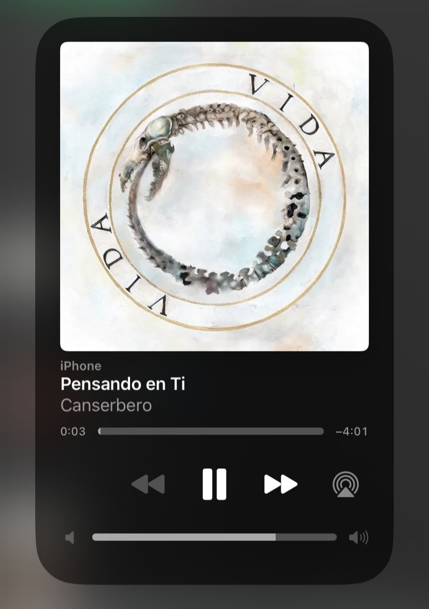
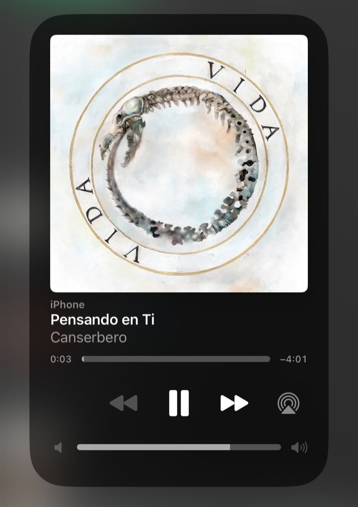

About me
My name is Yeimi Paola and this is the beginning of my own autobiography. I was born on August 19, 2003 in the municipality of Sabanalarga. I currently live with my parents and I am the third of 4 siblings. Since my childhood I completely loved nature, I was excited by the fact that only knowing what the process of photosynthesis was, why clouds were formed, issues of climate changes, etc.,
Funny but true, proved to be self-taught, she was very witty and innocent, with a desire to discover the world, which my parents noticed in me that sufficiency that she gave birth to which would be a great hobby to learn and apply my knowledge within a work field. To begin with, I am a teenager with goals, with desire to grow physically and mentally, as you already know, the life of a teenager is not easy but it is not difficult either, since we are in the stage of changes physical and emotional, which we cannot control of our own volition because it is something normal that happens
My hobbies
I always tend to enjoy my free time in very productive ways, my favorite hobbies are reading books that express emotions, unsolved cases, I love listening to songs by Kevin Karl, Ed Maverick and Feid, I enjoy spending time with my special friends, as well as watching series.
I de-stress with everyday activities, I love experimenting with new recipes and putting them into practice; I spend most of my time getting to know and explore new places, new cultures, take nature trips, I like programs when it comes to martial arts, boxing, wrestling and basketball, I train CrossFit, it is about doing exercises with my own body weight, as well as being able to control it and have a good balance of it pdt: I write notes
At the moment
I am in the field of HSEQ, and software management by vocation, since my desire has always been to become a professional businesswoman. I am a Technologist in integrated management systems (HSEQ), and a Technician in Conservation of Natural Resources, Respel management, among other certificates. My goal in this regard is to stand out as a web developer.
Everything has its time, and the time for me came, not only for the purpose of preparing and obtain greater knowledge in the field as a developer; but also with the purpose of becoming a better person thanks to the advice of trained people and also by giving me the opportunity to exchange experiences with my colleagues. I know that this career will give me the possibility to idealize my projects in the best way... I hope to become a competitive person, since currently we must be at the forefront and with the knowledge necessary to overcome obstacles.
 
